Заряд, електричне поле й потенціал
Уся електроніка — від світлодіода до політного контролера — стоїть на одному явищі: десь є заряд, він рухається, і ми цим керуємо. Перш ніж говорити про струми, напруги й сигнали, треба міцно зрозуміти три речі: що таке заряд, як він діє на відстані через поле і що означає потенціал. Ця глава будує цей фундамент від першопричин.
§ 1.1Заряд — фундаментальна властивість матерії
Ми весь час казатимемо «заряд тече», «заряд накопичився», «заряд штовхає заряд». Але що таке сам заряд (charge, позначають q або Q, одиниця — кулон)? Його не можна взяти пінцетом окремо від речовини, як не можна тримати в долоні саму «масу» без тіла. Заряд — це фундаментальна властивість матерії: такий самий первинний цеглинок опису природи, як маса. Чесна відповідь у дусі фізики: ми не знаємо, чим заряд «є» на якомусь глибшому рівні, — зате точно знаємо, що він робить. І саме через те, що він робить, ми його й означуємо.
Заряд означують через те, що він робить
Усе спостережуване зводиться до кількох простих фактів. Заряд буває двох сортів, які Франклін назвав додатним (positive, +) і від'ємним (negative, −). І діє непорушне правило взаємодії:
однойменні заряди (+ і +, − і −) → відштовхуються різнойменні заряди (+ і −) → притягуються нейтральне тіло (заряду немає) → не штовхає й не тягне (майже)
Це означальна поведінка: «бути зарядженим» саме й означає «штовхати інші заряди за цим правилом». Зверніть увагу на дивовижну економність природи: сортів рівно два, не три й не сім. Уся складність електрики виростає з цієї простої двійки.
Звідки береться заряд: атомна картина
Усе збудовано з атомів, а кожен атом — це важке ядро у хмарі легких електронів. У ядрі сидять протони із зарядом +e кожен і нейтрони без заряду. Навколо — електрони із зарядом −e кожен.

Ось ключ до того, чому звичайні предмети не б'ють струмом просто так: у них рівно стільки ж +, скільки −, і ці заряди майже ідеально гасять одне одного. «Зарядити тіло» означає лише порушити цей баланс — додати або забрати трохи носіїв.
Що насправді рухається: електрони
Протони замкнені в ядрі під дією ядерних сил — зрушити їх практично неможливо. А от електрони — легкі (майже у 2000 разів легші за протон) і сидять на периферії атома. Саме вони здатні переходити з тіла на тіло. Тому майже завжди, коли в нашому курсі «рухається заряд», фізично рухаються електрони.
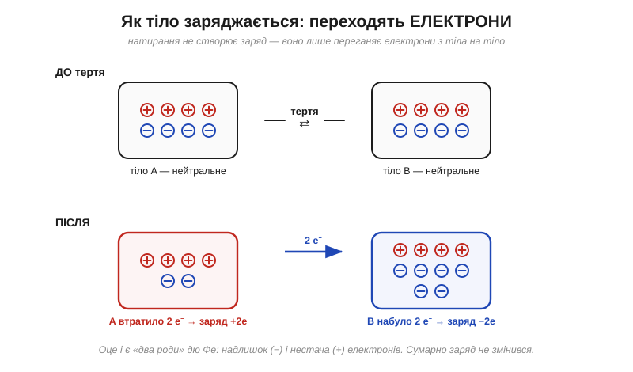
Заряд квантований: лише цілі порції e
Якщо заряд переносять окремі електрони, то він не може бути «яким завгодно» — він іде порціями. Найменша порція вільного заряду — елементарний заряд (elementary charge) e:
e = 1.602 × 10⁻¹⁹ Кл
Будь-який заряд, який можна виміряти на тілі, дорівнює цілому числу таких порцій: q = N·e, де N — ціле. Заряду «півтора електрона» у вільному стані не буває.
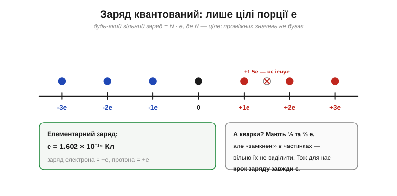
Приклад. Скільки електронів в одному кулоні?
N = Q / e N = 1 Кл / (1.602 × 10⁻¹⁹ Кл) N ≈ 6.24 × 10¹⁸ електронів
Понад шість мільярдів мільярдів. Кулон — колосальна порція заряду.
Заряд зберігається
З того, що заряд лише переходить, випливає один із найнепорушніших законів фізики — збереження заряду (conservation of charge): у замкненій системі сумарний заряд незмінний.

Одиниця — кулон, і наскільки він великий
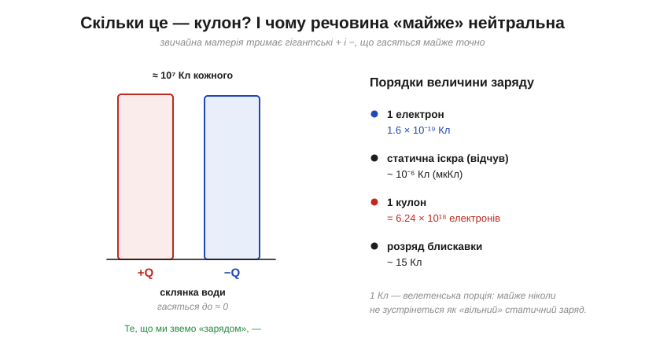
Приклад. Натерта повітряна кулька має типовий заряд −20 нКл. Скільки надлишкових електронів?
Q = −20 нКл = −20 × 10⁻⁹ Кл N = |Q| / e = (20 × 10⁻⁹) / (1.602 × 10⁻¹⁹) N ≈ 1.25 × 10¹¹ електронів
Провідник чи ізолятор
У провідниках (conductors — метали, солона вода, тіло людини) частина електронів не прив'язана до конкретного атома й може гуляти по всьому об'єму. У ізоляторах (insulators — скло, пластик, суха деревина, гума) всі електрони міцно сидять на місцях.
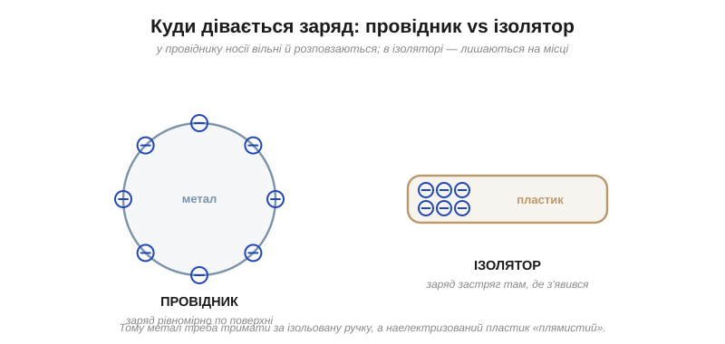

Трибоелектричний ряд
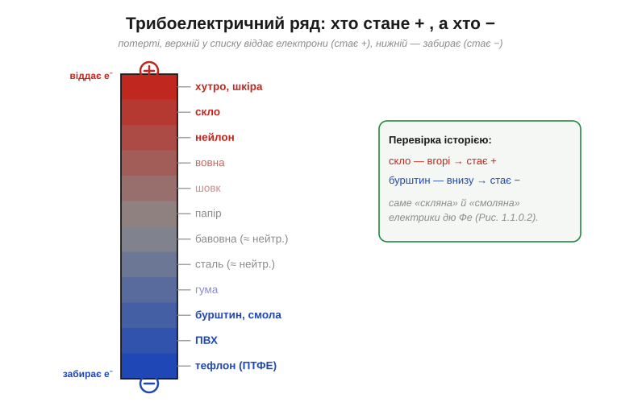
Чому заряджене тіло притягує навіть нейтральне
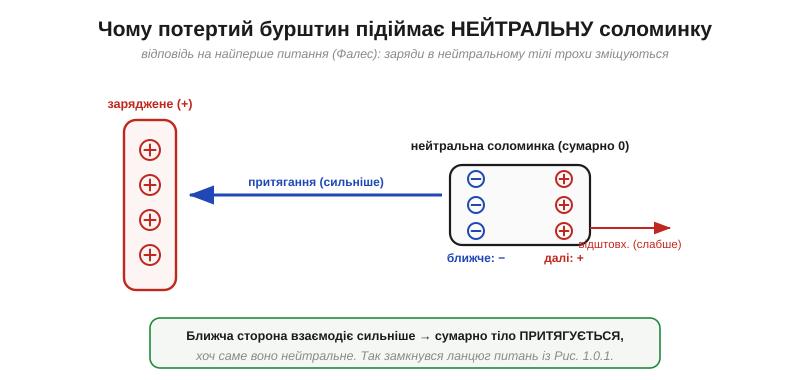
Підсумок §1.1: заряд — первинна властивість матерії двох сортів (+/−); фізично переносять його електрони; він квантований (порціями e) і зберігається; одиниця — велетенський кулон; а доля заряду на тілі залежить від того, провідник це чи ізолятор.
§ 1.2Сила між зарядами: закон Кулона
Сам закон: модуль і напрямок
Кулон установив: сила між двома точковими зарядами прямо пропорційна добутку їхніх величин і обернено пропорційна квадрату відстані між ними.

F = k · |q₁ · q₂| / r² k = 1 / (4·π·ε₀) ≈ 8.99 × 10⁹ Н·м²/Кл² (стала Кулона) ε₀ ≈ 8.854 × 10⁻¹² Кл²/(Н·м²) (проникність вакууму)
Тут q₁, q₂ — величини зарядів (у кулонах), r — відстань між ними (у метрах), а k — стала Кулона. Формула — для точкових зарядів або рівномірно заряджених куль (тоді r міряють між центрами). Закон — для зарядів у спокої.
Векторний запис та одиниці
F⃗ = k · (q₁ · q₂ / r²) · r̂ [k] = Н·м²/Кл² [k · q² / r²] = (Н·м²/Кл²) · Кл² / м² = Н ✓
Приклад. Два заряди по 1 мкКл на відстані 1 см:
q₁ = q₂ = 1 × 10⁻⁶ Кл, r = 0.01 м F = (8.99 × 10⁹) · (10⁻⁶)² / (0.01)² F ≈ 89.9 Н
Майже 90 ньютонів від двох мікрокулонів. Ось чому в природі вільні заряди такі малі: великий вільний заряд породив би нестерпні сили.
Закон оберненого квадрата: чому саме 1/r²

Показник степеня тут саме 2, а не 1.99 чи 2.01. Це не наближення — точність «двійки» перевіряли понад двісті років і щоразу підтверджували з фантастичною строгістю.
Та сама форма, що й тяжіння — але незрівнянно сильніша

Приклад. У скільки разів електрика сильніша за гравітацію між двома протонами?
F_e / F_g = (k · e²) / (G · m_p²) k · e² = (8.99 × 10⁹) · (1.602 × 10⁻¹⁹)² ≈ 2.31 × 10⁻²⁸ G · m_p² = (6.674 × 10⁻¹¹) · (1.673 × 10⁻²⁷)² ≈ 1.87 × 10⁻⁶⁴ F_e / F_g ≈ 1.2 × 10³⁶
Коли зарядів багато: принцип суперпозиції

Сила залежить від середовища
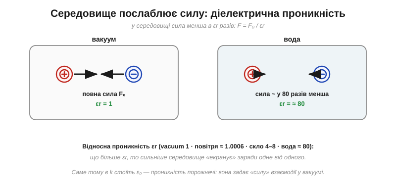
Приклад. Ті самі заряди у воді (εr ≈ 80):
F_вакуум ≈ 89.9 Н F_вода = 89.9 / 80 ≈ 1.1 Н
Підсумок §1.2: сила між зарядами — F = k·|q₁q₂|/r² — діє вздовж лінії між ними, спадає як обернений квадрат відстані, складається за суперпозицією й послаблюється середовищем.
§ 1.3Поле: посередник між зарядами
Закон Кулона чудово рахує силу — але лишає без відповіді питання: два заряди притягуються на відстані, не торкаючись. Між ними — порожнеча. Звідки ж заряд q₂ «знає», що десь поодаль є q₁? Ця ідея «дії на відстані» бентежила фізиків понад століття. Відповідь — поле.

Що таке напруженість поля: E = F/q
Помістимо в точку малий пробний заряд q і поміряємо силу F. Щоб дістати характеристику тільки простору, поділимо силу на заряд:
E = F / q (одиниця: Н/Кл)
Ця величина — напруженість електричного поля (electric field, E). Вона векторна: її напрямок — це напрямок сили на додатний пробний заряд. Поле каже, яка сила припаде на кожен кулон заряду в цій точці.
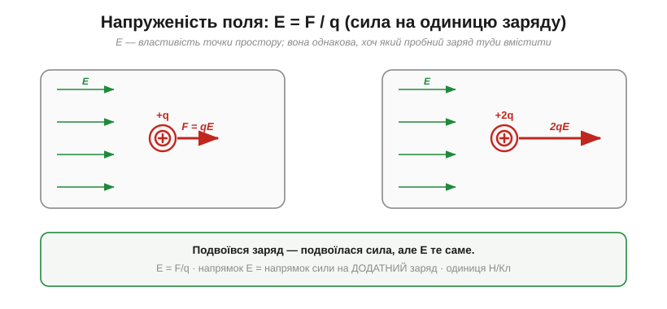
Поле точкового заряду
E = k · Q / r²
Поле точкового заряду радіальне: від додатного — назовні, у від'ємний — всередину, і слабшає за законом оберненого квадрата.

Приклад. Поле заряду Q = 1 нКл на відстані 3 см:
E = k · Q / r² E = (8.99 × 10⁹) · (1 × 10⁻⁹) / (0.03)² E ≈ 1.0 × 10⁴ Н/Кл
Лінії поля: винахід Фарадея
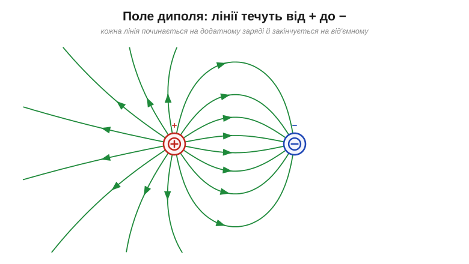
Приклад. Поле посередині між зарядами Q₁ = +3 нКл і Q₂ = −3 нКл (відстань 6 см):
r = 0.03 м (до кожного від середини) E₁ = k·Q₁/r² ≈ 3.0×10⁴ Н/Кл (від + → праворуч) E₂ = k·|Q₂|/r² ≈ 3.0×10⁴ Н/Кл (до − → теж праворуч) E = E₁ + E₂ ≈ 6.0×10⁴ Н/Кл (від + до −)
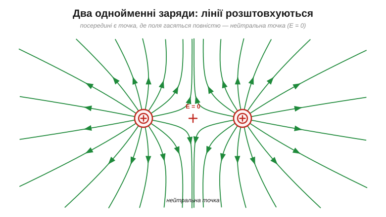
Однорідне поле
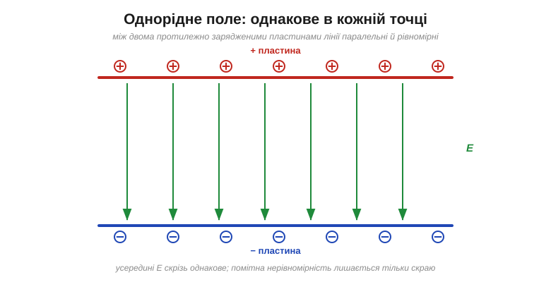
Поле біля провідників: чому вістря «колють»

Приклад. Сила на електрон у полі пробою E ≈ 3×10⁶ Н/Кл:
F = e · E = (1.602 × 10⁻¹⁹) · (3 × 10⁶) F ≈ 4.8 × 10⁻¹³ Н
Підсумок §1.3: поле E = F/q — посередник, що знімає загадку дії на відстані. Поле точкового заряду — радіальне, E = kQ/r²; поля складаються векторно; їх наочно показують лінії Фарадея; а біля вістрів поле згущується аж до пробою.
§ 1.4Робота, потенціальна енергія й потенціал
У §1.3 ми навчилися казати, з якою силою поле штовхає заряд. Щойно заряд під дією цієї сили рушає, виконується робота й переноситься енергія. Зробімо вирішальний крок: від сили перейдімо до енергії — і так природно прийдемо до потенціалу.
Робота: переміщення заряду в полі
W = F · d = q · E · d

Потенціальна енергія: точна аналогія з висотою

Потенціал: енергія на одиницю заряду
V = PE / q (одиниця: Дж/Кл = вольт, В)
Потенціал — це потенціальна енергія, що припала б на кожен кулон заряду в цій точці. Він грає роль «електричної висоти». 1 вольт = 1 джоуль на кулон.

Еквіпотенціалі

Різниця потенціалів — і чому нуль обираємо самі
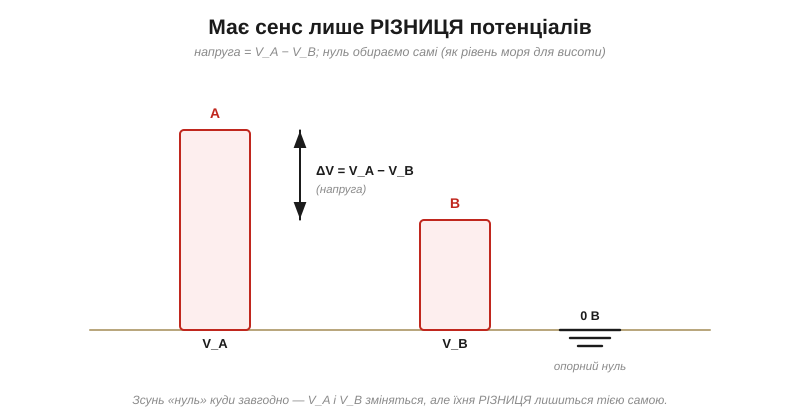
Поле — це крутість потенціалу: E = ΔV/d

E = ΔV / d (однорідне поле)
Приклад. Енергія заряду q = 2 мкКл через ΔV = 9 В:
W = q · ΔV = (2 × 10⁻⁶) · 9 = 1.8 × 10⁻⁵ Дж = 18 мкДж
Приклад. Яка напруга пробиває 1 мм повітря (E ≈ 3×10⁶ В/м)?
ΔV = E · d = (3 × 10⁶) · (10⁻³) ≈ 3000 В = 3 кВ
Зручна одиниця енергії: електронвольт
1 еВ = e · (1 В) = 1.602 × 10⁻¹⁹ Дж
Підсумок §1.4: поле консервативне → потенціальна енергія → потенціал V (одиниця — вольт = Дж/Кл); фізичний сенс має лише різниця; крутість потенціалу є поле, E = ΔV/d.
§ 1.5Головна думка: вольт — це джоуль на кулон
Якщо в усій цій главі є одна думка, яку треба винести й закарбувати назавжди, — то це вона:
1 В = 1 Дж / Кл
Вольт — це енергія на одиницю заряду. Не сила, не кількість заряду, не «потужність розетки» — а саме скільки джоулів несе кожен кулон.

W = q · V (джоулі = кулони × вольти)
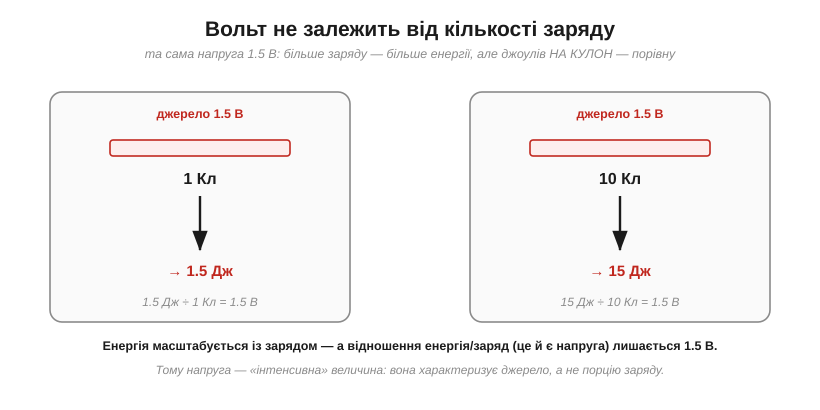
Водяна аналогія

Реальні напруги

Джерело — це насос енергії

Приклад. Скільки енергії в лужному елементі AA (1.5 В, 2000 мА·год)?
Q = 2 А·год = 7200 Кл W = Q · V = 7200 × 1.5 ≈ 10 800 Дж ≈ 10.8 кДж
Приклад. Акумулятор телефона (3.7 В, 3000 мА·год):
Q = 3 А·год = 10 800 Кл W = 10 800 × 3.7 ≈ 40 000 Дж ≈ 40 кДж ≈ 11 Вт·год
Підсумок §1.5: вольт — це джоуль на кулон, енергія, яку несе кожна одиниця заряду. Джерело «піднімає» заряд; коло «спускає» й витрачає. Ми описали заряд, поле й потенціал. Лишилося побачити, що поле й потенціал — це не дві різні речі, а одне явище двома мовами.
§ 1.6Поле й потенціал — одне явище двома мовами
E і V — це не дві різні речі, а два описи однієї й тієї самої реальності. Як карта місцевості, яку можна задати або стрілками схилів, або лініями висот: інформація та сама, мова різна.
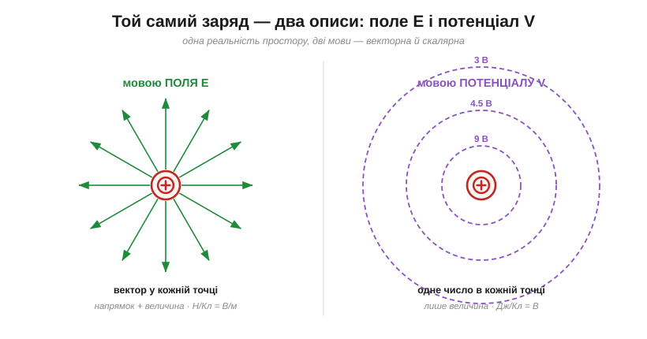
Топографічна аналогія
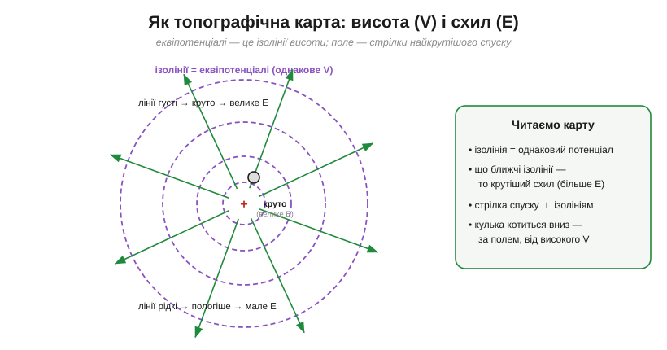
Точний зв'язок: поле — це крутість потенціалу
E = −(нахил V уздовж напрямку) (в однорідному полі: E = ΔV / d)

Саме тому одиниця поля — В/м: вона буквально каже «скільки вольтів потенціалу спадає на кожному метрі». Н/Кл і В/м — те саме число.
Провідник — увесь на одному потенціалі
У рівновазі всередині провідника поля немає: заряди рухалися б, аж поки не погасили б його. А якщо E = 0 всюди в металі — увесь провідник сидить на одному значенні V. Дріт — це майже еквіпотенціаль по всій довжині.
Чому дві мови? Бо одну рахувати легше


Приклад. Потенціал від двох зарядів (+2 нКл за 3 см і +1 нКл за 6 см):
V₁ = k·Q₁/r₁ = (8.99×10⁹)(2×10⁻⁹)/0.03 ≈ 599 В V₂ = k·Q₂/r₂ = (8.99×10⁹)(1×10⁻⁹)/0.06 ≈ 150 В V = V₁ + V₂ ≈ 749 В (просто сума — бо потенціал скалярний)
Приклад. Зсув нуля не чіпає різниці:
було: V_A = 5 В, V_B = 2 В → ΔV = 3 В стало: V_A = 3 В, V_B = 0 В → ΔV = 3 В
Підсумок §1.6: E й V — дві мови одного явища. Поле — крутість потенціалу (E = −нахил V); потенціал — накопичена дія поля. У колах говорять мовою V (скаляр, зручно); до мови E повертаються там, де важлива геометрія (ізоляція, пробій, антени).
§ 1.7Зведення докупи


Приклад (вся глава в одному розрахунку). Точковий заряд Q = +10 нКл; розглянемо точку за 5 см:
поле там: E = k·Q/r² = (8.99×10⁹)(10⁻⁸)/(0.05)² ≈ 3.6×10⁴ Н/Кл потенціал там: V = k·Q/r = (8.99×10⁹)(10⁻⁸)/(0.05) ≈ 1800 В сила на +2 нКл: F = qE = (2×10⁻⁹)(3.6×10⁴) ≈ 7.2×10⁻⁵ Н енергія (від 5 до 10 см): V(10 см) ≈ 900 В W = q·ΔV = (2×10⁻⁹)(900) ≈ 1.8×10⁻⁶ Дж = 1.8 мкДж
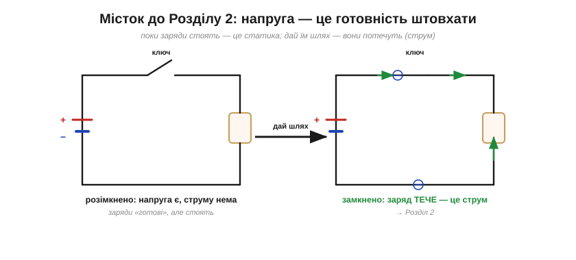
Ланцюг питань: від бурштину до поля

Питання 1. Чому потертий бурштин притягує соломинку?
Усе почалося з прикраси. Бурштин (грец. ēlektron) — застигла смола хвойних дерев — цінувався не лише за теплий колір. Ще близько 600 року до н. е. Фалес Мілетський помітив: якщо потерти бурштин об хутро, він починає притягувати пушинки і соломинки. Камінь без жодного руху раптом «тягнеться» до легких речей.
Грецьке слово ēlektron — «бурштин» — через століття дало назву всьому явищу: електрика. Коли 1891 року шукали ім'я для найдрібнішої порції заряду, її теж назвали — електрон.
Питання 2. Це те саме, що магніт?
Майже два тисячоліття бурштин і магніт лежали в одній скриньці «таємничих притягань». Розплутати їх судилося Вільяму Гілберту (William Gilbert, 1544–1603) — лікареві королеви Єлизавети I. У трактаті «De Magnete» (1600) він першим системно розділив два явища й вигадав слово «electrica». Так народився сам термін. Його перший вимірювальний прилад — легка стрілка на вістрі, що поверталася до наелектризованого тіла, — це перший електроскоп.
Питання 3. Чи можна цю силу робити, а не випрошувати тертям?
Близько 1663 року Отто фон Геріке зліпив кулю з сірки й крутив, притискаючи долоню — перша електростатична машина. Тепер електрику не доводилося випрошувати дрібними порціями. І тоді вперше проявилися іскри та тріск — виникла спокуса уявити електрику як невидимий флюїд.
Питання 4. Сила сидить у тілі — чи може текти?
Англійський фарбар-аматор Стівен Грей (Stephen Gray, 1666–1736) близько 1729 року з'ясував: можна. Він зарядив скляну трубку, торкнув нею корка на кінці вологої конопляної нитки — і далекий кінець нитки теж почав притягувати клаптики. Та лише коли нитку тримали шовкові петлі — електрика бігла на сотні футів.

Питання 5. Чому одне притягує, а інше відштовхує?
Французький хімік Шарль Франсуа дю Фе близько 1733 року помітив систему: натерте скло й натерта смола заряджаються по-різному — однакові відштовхуються, а різні притягуються. Він назвав два сорти «скляна» і «смоляна» електрика. Це той самий закон, який ми сьогодні промовляємо як «однойменні заряди відштовхуються, різнойменні притягуються».

Питання 6. Чи можна електрику накопичити?
Наприкінці 1745–1746 роках незалежно виникла лейденська банка — скляна банка з провідним покриттям, що вміла накопичити стільки заряду, що розряд звалював із ніг. Електрика з делікатної цяцьки стала силою, яку можна нагромадити й випустити одним ривком.
Питання 7. А якщо флюїд один? І куди він тече?
Американець Бенджамін Франклін (1706–1790) відкинув «дві рідини» дю Фе. Він припустив: флюїд один; натирання лише переганяє його — у кого надлишок, той «плюс»; у кого нестача — «мінус». Звідси — закон збереження заряду.
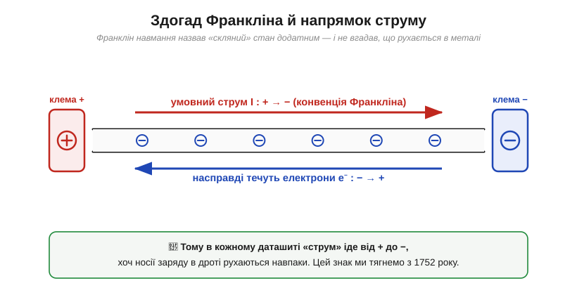
Питання 8. Притягує — а наскільки сильно?
Шарль-Огюстен де Кулон перетворив «тягнеться» на формулу крутильними терезами. Саме з Кулона починається кількісна §1.2 — закон сили між зарядами. Цю історію детально розказано окремо: Кулон і крутильні терези.
Питання 9. Звідки взяти сталий потік, а не одну іскру?
Відповідь народилася зі суперечки двох італійців — Луїджі Гальвані й Алессандро Вольти. Зі цієї полеміки 1800 року постала вольтова батарея — перше джерело сталого струму. На честь Вольти названо вольт. Детально: Вольта проти Гальвані.
Питання 10. Що тягнеться крізь порожнечу між тілами?
Майкл Фарадей (1791–1867) запропонував зухвалу думку: простір навколо заряду вже змінений — заповнений невидимими лініями сили. Так народилося поняття поля — можливо, найважливіша абстракція в усій фізиці. Детально: Фарадей — людина, що вигадала поле.
Куди привів цей ланцюг
За двадцять чотири століття людство пройшло від «дивно, бурштин липне» до поля. Закам'янілі сліди цього шляху:
- слово електрика — від грецького «бурштин»;
- поділ на провідники й ізолятори — від шовкових петель Грея;
- знаки + і − та умовний напрямок струму — від монетки, яку підкинув Франклін;
- збереження заряду → закон Кірхгофа;
- одиниці кулон, вольт, фарад — імена тих, хто вклав у це числа.
Кулон і крутильні терези: як зважили невидиму силу
Питання 1. Чи можна вгадати закон, нічого не вимірюючи?
Франклін якось помітив дрібницю: якщо наелектризувати металевий кухоль, а всередину на нитці опустити коркову кульку, та не притягується до стінок. Усередині зарядженого тіла — наче нічого й нема. Він написав про це хіміку Джозефу Прістлі. Прістлі згадав, що Ньютон довів: усередині порожнистої кулі сила тяжіння точно нульова — але лише тому, що тяжіння спадає як обернений квадрат. Якби закон був інакший, всередині лишалася б ненульова сила. Звідси Прістлі зробив висновок: і електрична «порожнеча всередині» означає закон 1/r².

Питання 2. Геній, що мовчав
Генрі Кавендіш (1731–1810) — нечувано багатий англійський аристократ і патологічно сором'язливий відлюдник. Близько 1772–1773 років він виміряв, що показник степеня в законі дорівнює 2 з похибкою не більше 1/50 — підтвердив закон Кулона до самого Кулона і точніше. І… поклав записи в шухляду. Його електричні роботи пролежали непоміченими близько ста років, аж доки Максвелл не видав їх 1879 року.
Питання 3. Як збудувати ваги для такої крихітної сили?
Шарль-Огюстен де Кулон (1736–1806) — військовий інженер. Роками він будував укріплення, а у вільний час досліджував закручування ниток і дротів. Він знав: якщо тонку нитку закрутити, вона повертається на кут, точно пропорційний прикладеному зусиллю. Нитка — ідеальна, лінійна, надзвичайно чутлива пружина для крутіння. Так 1785 року народилися крутильні терези (torsion balance).

Чутливість була фантастична — терези відчували силу в тисячні частки грама. Виходило чисте 1/r².
Питання 4. Як міняти заряд на відому величину?
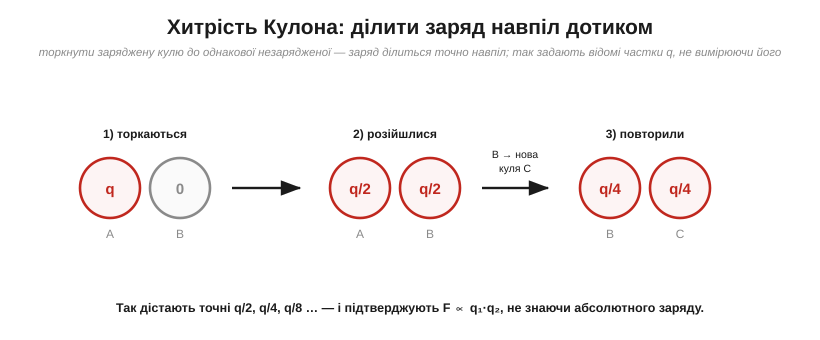
Поєднавши залежність від відстані (1/r²) і від зарядів (q₁·q₂), Кулон дістав повний закон:
F = k · q₁ · q₂ / r²
Питання 5. Чому майже завжди відштовхування?
При притяганні рухома кулька підходить ближче → сила зростає (1/r²), але момент нитки росте лише пропорційно куту → у якийсь момент сила перемагає й кульки злипаються. При відштовхуванні все навпаки: підійшли ближче — відштовхування зросло й саме відпихнуло назад; рівновага стійка.
Для перевірки притягання Кулон використав інший метод: заряджена голка коливалася біля нерухомого заряду — і з частоти коливань теж виходило 1/r². Два незалежні методи — один результат.
Озирнімося: закон спершу прочитали з порожнечі (Прістлі), потім виміряли потай і змовчали (Кавендіш), і нарешті зважили невидиме на закрученій нитці (Кулон). Щоразу, пишучи «Кл», ви вшановуєте людину з крутильними терезами.
↑ Повернутися до § 1.2Фарадей — людина, що вигадала поле
Питання 1. Як syn коваля потрапляє в науку?
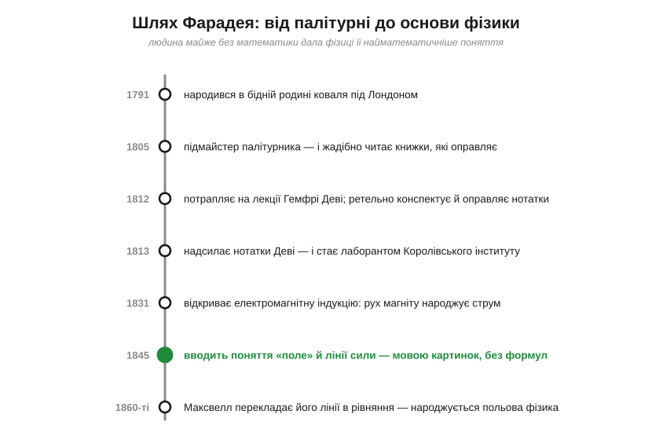
Майкл Фарадей (1791–1867) народився в бідній родині коваля під Лондоном. У чотирнадцять — підмайстер до палітурника. Він не просто оправляв книжки — він їх читав. Один із клієнтів дав квитки на лекції хіміка Гемфрі Деві. Фарадей оправив свої нотатки в книжечку й надіслав Деві з проханням про роботу. Деві взяв його лаборантом — спершу мити посуд. Коли Деві питали про найбільше відкриття, він відповідав: «Майкл Фарадей».
Питання 2. Що там, у проміжку між тілами?
На той час фізику електрики описували мовою дії на відстані. Фарадея ця картина не вдовольняла. Він поставив наївне на позір, але глибоке питання: що насправді відбувається в просторі між тілами? Невже там абсолютно нічого?
Питання 3. Чи можна побачити невидиме?
Насипте залізних ошурок біля магніту — і вони вмить шикуються в чіткі криві лінії. Для більшості це був цікавий фокус. Для Фарадея — карта реальності.

Він назвав ці криві лініями сили (lines of force), а простір — полем (field). Це і є відповідь §1.3: заряд не діє на інше тіло через пустку — він змінює простір довкола себе, а вже інше тіло реагує на поле локально.
Питання 4. Чому з нього кепкували — і чому правда була за ним?
Академічні математики дивилися на «лінії сили» зверхньо: справжня наука — це формули. Та сталося парадоксальне: саме картинка дала Фарадею відкрити те, що проґавили формули. 1831 року він відкрив електромагнітну індукцію: рухаючи магніт крізь котушку, побачив струм. Образ ліній, які провідник «перетинає», підказав, де шукати ефект. На цьому відкритті постала вся електрична доба: генератори, трансформатори, двигуни.
Питання 5. Як картинка стала фундаментом фізики?
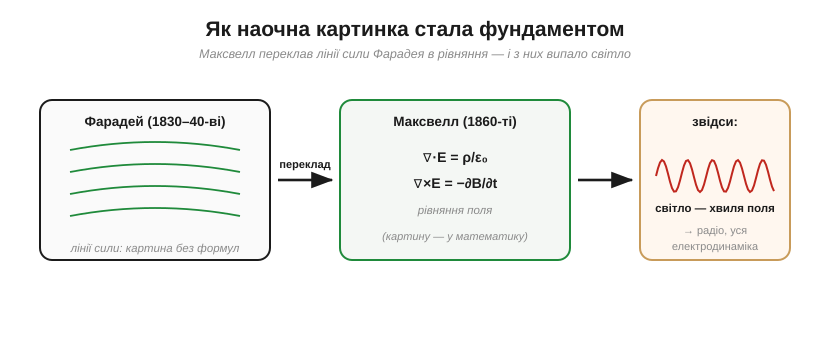
Джеймс Клерк Максвелл переклав лінії сили на мову рівнянь — і з цих рівнянь несподівано «випало», що світло — це електромагнітна хвиля. Видиме світло, радіохвилі, рентген — одне явище. Електрика, магнетизм і оптика злилися в одну науку.
Не лише поле: інші монументи Фарадея
Ще 1821 року Фарадей змусив дріт зі струмом безперервно обертатися навколо магніту — перший в історії електромотор. А у словнику його праць з електролізу: іон, електрод, анод, катод, електроліт — ці слова ви щодня бачите в даташитах.
Слід Фарадея — усюди: фарад (одиниця ємності), клітка Фарадея (екранування), саме поняття поля — спадок людини, що думала образами.
↑ Повернутися до § 1.3Вольта проти Гальвані: суперечка, що дала світові батарею
Питання 1. Чому смикається лапка мертвої жаби?
Болонья, 1780-ті. Анатом Луїджі Гальвані (1737–1798) помічає: лапка вже мертвої жаби раптом смикається, мов жива, коли її торкаються металевим інструментом — особливо якщо поряд іскрить електростатична машина. А ще разючіше: коли лапку, підвішену на латунному гачку, торкають до залізних поручнів, вона теж сіпається. Жодної машини — лише два метали й мертва тканина.

Питання 2. Це справді жаба — чи метали?
Алессандро Вольта (1745–1827) висунув зустрічну гіпотезу: а що, як джерело електрики — зовсім не жаба, а стик двох різних металів? Тоді лапка — лише чутливий прилад, що відгукується на найменший струм.

Питання 3. Як розсудити — прибрати жабу?
Вольта поклав на язик дві монети з різних металів, з'єднав їх — і відчув кислуватий металевий присмак. Жодної тканини жаби — лише два метали й слина. А далі він склав багато таких пар одну на одну — і 1800 року народився вольтів стовп (voltaic pile) — перша батарея.
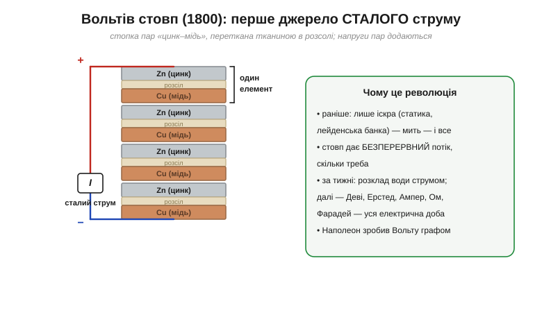
Питання 4. Чому сталий струм — це революція?
До 1800 року електрика була лише іскрою: накопичив — розрядив — усе. Вольтів стовп дав безперервний потік. Уже за кілька тижнів струм стовпа розклав воду на водень і кисень. Далі — лавина: Ерстед, Ампер, Ом, Фарадей, — уся електрична доба XIX ст. виросла з вольтового стовпа.
Питання 5. То хто ж мав рацію?
У безпосередній суперечці переміг Вольта — батарея незаперечно довела: електрика народжується з хімії різних металів. Але Гальвані не був цілком неправий: нерви й м'язи справді працюють на електриці. Він краєм ока побачив реальне явище — біоелектрику.

Кожна батарея у вашому пристрої — прямий нащадок вольтового стовпа: дві різні речовини + електроліт. Принцип за 220 років не змінився, змінилася лише хімія.
↑ Повернутися до § 1.5